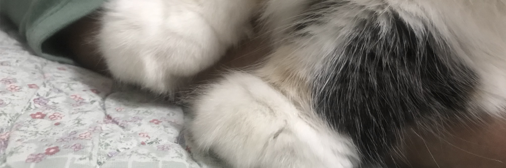
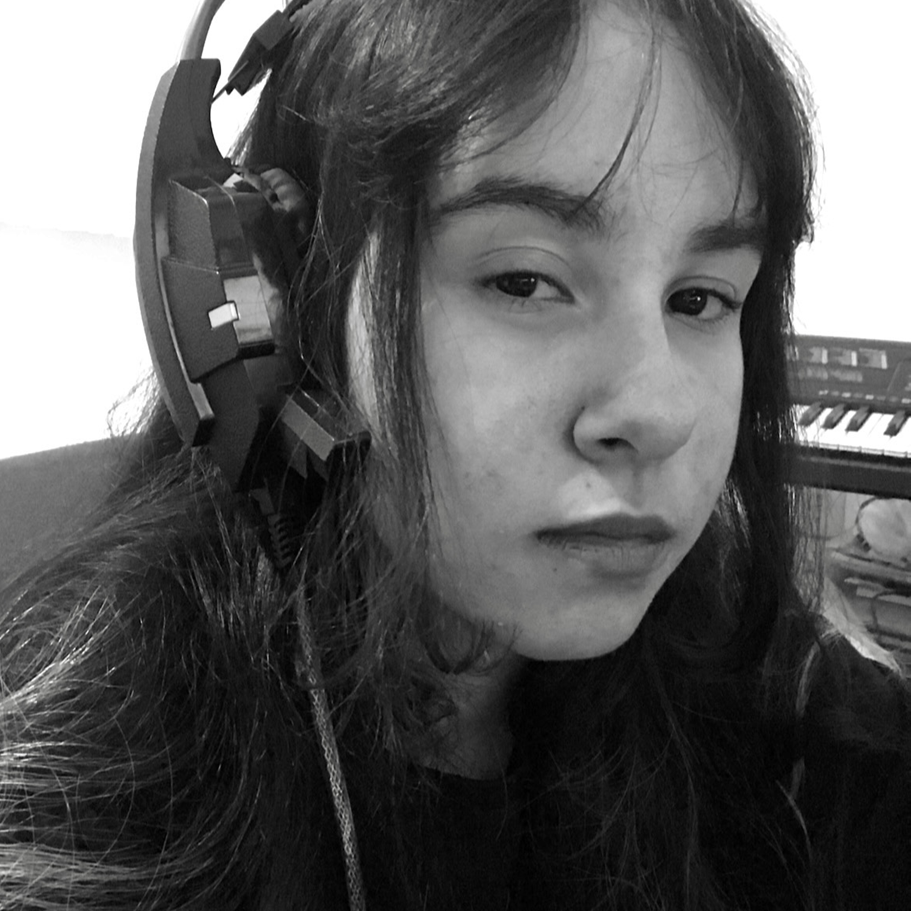

🐠Welcome to my Landing Page! 🐠
GitHub Currículo Serviços Contato

Olá! 👋
Meu nome é Lara, nasci em 2006, dia 7 de fevereiro no estado do Espiríto Santo, em Vila Velha!
All about me!
# HOBBIES
Praticar Taekwondo, ouvir música e jogar no computador...
Desde de pequena gosto desenhar, pintar, esculpir e fazer qualquer outra coisa artesanal!


# MUSICAS FAVORITAS
VIDA ACADÊMICA
| ENSINO FUNDAMENTAL | ENSINO MÉDIO |
|---|---|
| Durante o ensino fundamental 1 e 2, estudei nas escolas:
SESC, SESI e João Calmon. |
Estudei na escola Luiz Manoel Vellozo, Vila Velha. Completei o Ensino Médio integrado ao curso Técnico de Multimídia. |
|
Além das matérias regulares do ensino médio, sou formada em: |
|
| CURSOS |
|---|
| Curso introdutório à computação - INTROCOMP |
|
Realizei as duas etapas do curso de introdução à computação na UFES, o qual aprendi (de maneira superficial) a linguagem de programação PYTHON, através do projeto INTROCOMP. |
| FACULDADE | TRABALHO |
|---|---|
| Iniciei o curso de Ciência da Computação na UVV, no ano de 2024.
Participei das palestras: "Transformação Digital: Tendências e o Futuro do Desenvolvimento de Software" e "HI, INNOVATION!" Atualmente estou fazendo as matérias: |
Tenho muita vontade de trabalhar na área de TI, especialmente com desenvolvimento de software e inteligência artificial. |